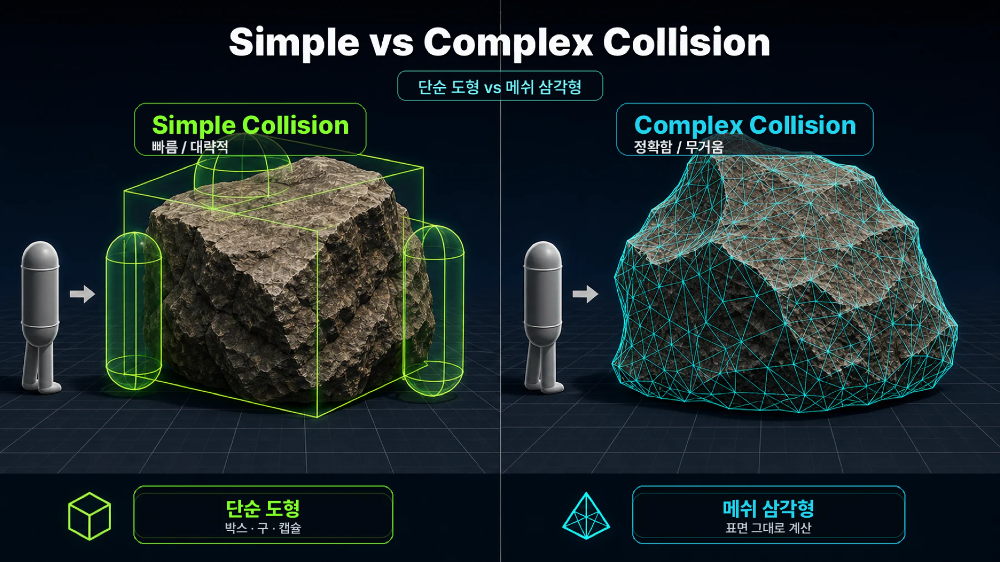
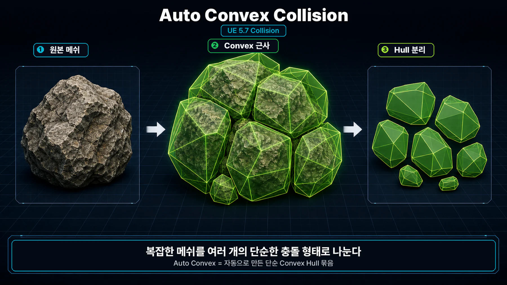
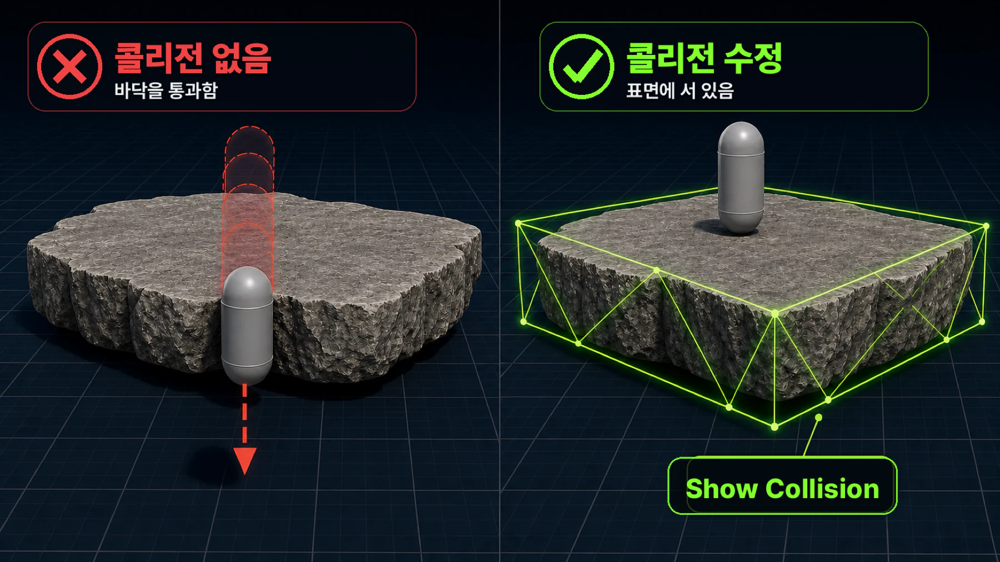
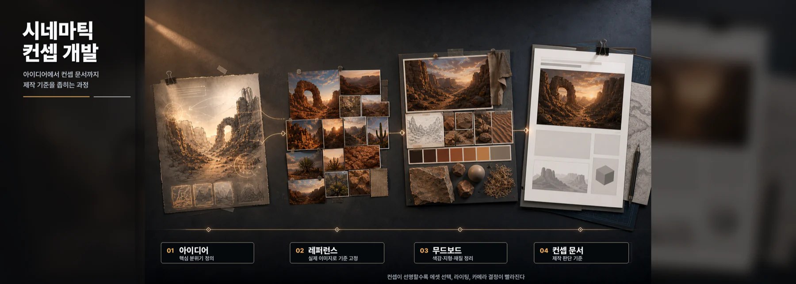
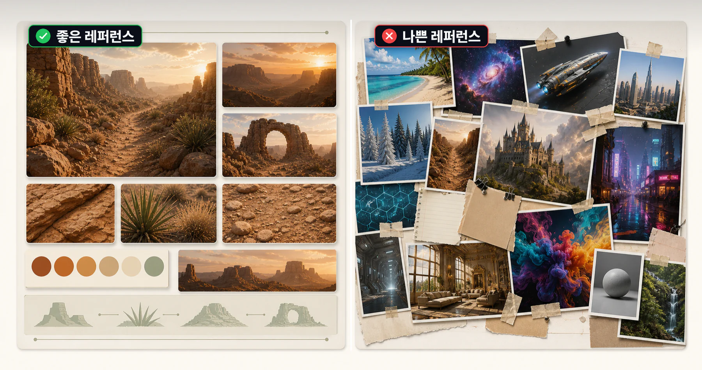
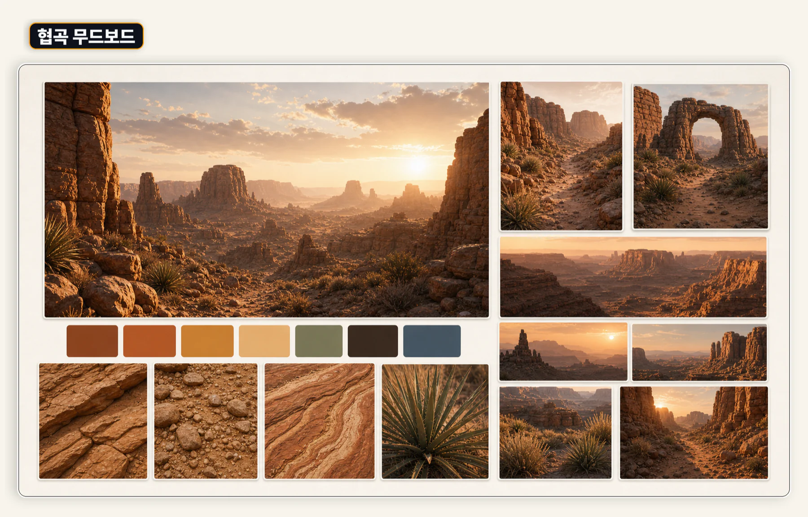
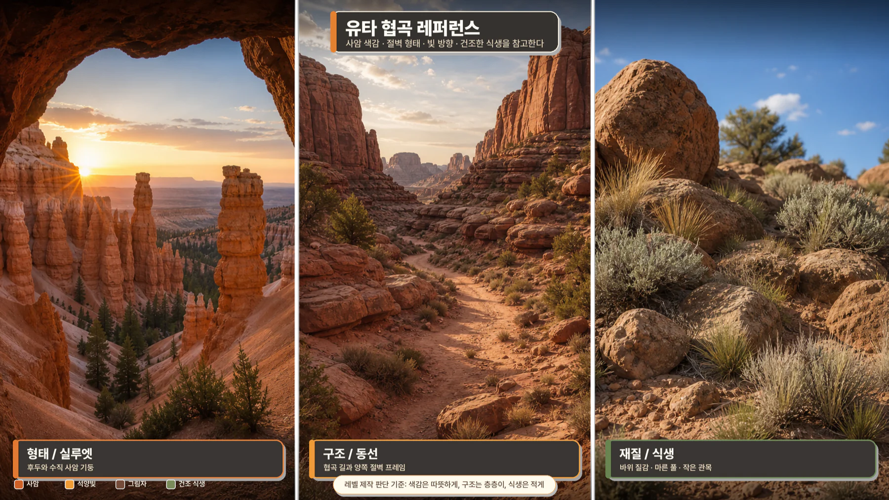
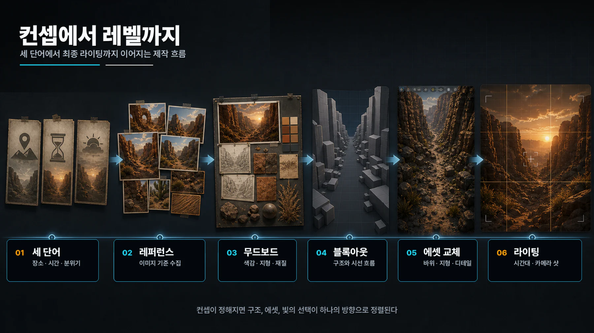

6주차 1교시 — 콜리전과 시네마틱 컨셉 개발 (학생용)
관련 문서
| 관계 | 문서 |
|---|---|
| 강의 계획서 | 강의계획서: Game Engine II |
| 강의 아웃라인 | 6주차 아웃라인: 콜리전과 레벨 디자인 기초 |
- 콜리전의 종류와 설정 방법을 이해할 수 있다
- Show Collision과 Static Mesh Editor에서 충돌 상태를 점검할 수 있다
- 시네마틱 컨셉 개발 프로세스를 익힐 수 있다
1교시 - 콜리전과 시네마틱 컨셉 개발
도입
지난 주까지 라이팅과 에셋 배치를 다뤘습니다. 레벨을 만들 수 있는 재료는 모두 갖춰졌습니다.
오늘은 두 가지를 다룹니다.
- 콜리전 — 캐릭터가 바닥을 뚫고 떨어지지 않게 하는 충돌 처리
- 시네마틱 컨셉 개발 — 어떤 분위기와 이야기를 담을지 먼저 정하는 과정. 기말 프로젝트의 출발점
핵심 개념 1: 콜리전
Simple vs Complex Collision
콜리전이 없으면 캐릭터가 바닥을 뚫고 떨어집니다. 메가스캔 에셋 중 콜리전이 안 맞는 경우가 종종 있습니다.
| 종류 | 방식 | 특징 |
|---|---|---|
| Simple Collision | 박스, 구 같은 단순 도형 | 빠르지만 대략적 |
| Complex Collision | 메쉬 삼각형 그대로 사용 | 정확하지만 느림 |
Simple Collision은 대략적인 물리 경계, Complex Collision은 실제 메쉬에 가까운 물리 경계라고 이해합니다.

시네마틱에서는 카메라만 움직이는 경우가 많으므로, 대부분은 Simple Collision만으로도 충분합니다.
콜리전 설정 방법
방법 1: 스태틱 메쉬 에디터
- Content Browser에서 스태틱 메쉬를 더블클릭하세요
- 상단 메뉴 Collision → Auto Convex Collision 선택 — 메쉬 모양에 맞춰 자동 생성됩니다
- 기본값으로 충분합니다
스태틱 메쉬 에디터 상단의 Collision 메뉴에서 Auto Convex Collision을 찾을 수 있습니다.

방법 2: Details 패널에서 Collision Complexity 변경
이미 배치한 에셋의 콜리전이 이상할 때 사용합니다.
- 에셋 선택 → Details 패널 → Collision Complexity 드롭다운
- Use Complex Collision As Simple 로 변경 — 메쉬 모양 그대로 충돌이 잡힙니다
시네마틱에서는 플레이어 이동보다 카메라 연출이 중심이므로, 콜리전이 이상할 때 이 옵션을 임시로 사용할 수 있습니다. 다만 실제 게임 플레이용 레벨에서는 성능과 정확도를 함께 봐야 합니다.
콜리전 확인
- 뷰포트 상단 Show 메뉴 → Collision 체크
- 녹색 와이어프레임이 보이면 콜리전이 있는 것입니다
Show > Collision을 켜면 녹색 와이어프레임으로 충돌 영역을 확인할 수 있습니다.

Show Collision으로 항상 확인하는 습관을 들이세요. 이것 하나만 기억해도 콜리전 문제의 대부분은 해결됩니다.
시네마틱 영상 분석: Ninety Days in UE5
콜리전까지 배웠으니 레벨을 만들 수 있는 기술은 모두 갖춰졌습니다. 하지만 기술이 있다고 좋은 레벨이 나오는 것은 아닙니다.
아래 영상은 Quixel 팀에서 UE5로 90일 동안 만든 환경들입니다.
Ninety Days in Unreal Engine 5 (https://www.youtube.com/watch?v=ca2ME4Wy0eM, 약 2분 30초)
장면 1 — 좁은 골목 (약 0:10)
- 카메라: 앞으로 천천히 트래킹. 좁은 공간 → 느린 전진으로 밀착감
- 색감: 어두운 톤 + 따뜻한 조명 하나 → 시선을 끌어당김
- 컨셉: "아늑하고 신비로운 골목"
장면 2 — 신전/대형 구조물 (약 0:30)
- 카메라: 아래에서 위로 상승 → 로우 앵글 상승 샷
- 효과: 거대한 구조물의 웅장함 표현
- 비교: 골목(수평 전진) vs 신전(수직 상승). 공간의 성격이 카메라 움직임을 결정
장면 3 — 숲/자연환경 (약 1:00)
- 카메라: 지면 레벨에서 숲 사이를 천천히 통과
- 조명: 나뭇잎 사이로 들어오는 갓레이
- 레이어: 전경(풀) → 중경(나무 줄기) → 원경(빛). 세 레이어로 깊이감 생성
- 2교시에서 이 개념을 자세히 다룹니다
장면 4 — 골든아워/석양 (약 1:40)
- 색감: 따뜻한 골든아워 톤으로 확 전환
- 핵심: 같은 엔진, 같은 에셋이라도 시간대만 바꿔도 분위기가 완전히 달라짐
- 모든 환경이 다른 분위기인 이유 → 각각 다른 '어디서, 언제, 어떤 느낌' 에서 출발
장면 5 — 마지막 장면 (약 2:20)
- 90일 동안 여러 환경을 빠르게 제작
- 이렇게 빠르게 방향을 잡을 수 있었던 이유: 컨셉이 확실했기 때문
- 방향이 잡혀 있으니 에셋 선택, 라이팅, 카메라까지 빠르게 결정 가능
지금까지 배운 기술로도 이런 결과물을 충분히 만들 수 있습니다. 다만 기술보다 먼저 컨셉을 잡는 것이 중요합니다.
추가 참고 영상
Electric Dreams — GDC 2023 UE5 데모 (https://www.youtube.com/watch?v=Lcd6KhMPkq0)
Epic Games가 GDC에서 보여준 숲 환경 데모입니다.
- 지면 레벨 카메라: 사람 눈높이로 숲 사이를 통과 → 높은 몰입감
- 갓레이: 나뭇잎 사이로 빛 → 5주차 Volumetric Fog와 연결
- PCG(절차적 생성): 나무와 풀이 자연스럽게 분포
Ninety Days = '여러 곳을 짧게', Electric Dreams = '한 곳을 깊게'. 이것도 컨셉에서 결정되는 것입니다.
William Faucher — Capturing Lofoten in UE5 (https://www.youtube.com/watch?v=ifryjffUJT8)
개인 아티스트가 노르웨이 해안을 UE5로 재현한 영상입니다.
- 슬라이딩 샷: 건물 측면을 낮게 수평 이동 → 공간의 폭을 보여줌
- 대기 원근감(Atmospheric Perspective): 멀수록 안개에 가려짐 → 깊이감. 5주차 Fog와 연결
- 피사계 심도(DOF): 앞의 풀은 흐리고, 뒤의 건물은 선명 → 시선을 중경으로 유도
- 레퍼런스: 실제 노르웨이 사진. 실제 장소를 레퍼런스로 쓰면 색감과 구조를 그대로 참고 가능
Senua's Saga: Hellblade 2 트레일러 (https://www.youtube.com/watch?v=qJWI4bkD9ZM)
현재 UE5로 만든 가장 높은 수준의 시네마틱 중 하나입니다.
- 스케일 대비: 거대한 절벽 앞에 작은 인물 → 환경이 캐릭터를 압도. "경이로움"을 표현
- 상승 샷: 천천히 상승하며 절벽 전체 노출 → Ninety Days 신전 장면과 같은 원리
- 포토그래메트리: 아이슬란드 화산 지형을 실제 스캔 → 현실감의 끝
- 카메라 속도: 매우 느림. 느린 카메라 = 웅장함/긴장감, 빠른 카메라 = 액션감. 7주차에서 상세히 다룸
핵심 개념 2: 시네마틱 컨셉 개발
컨셉 개발은 4단계로 진행됩니다.

1단계: 아이디어 발상
'어디서, 언제, 어떤 느낌' 세 가지를 정하는 단계입니다.
| 질문 | 예시 답변 |
|---|---|
| 어디? (장소/공간) | 사막 협곡, 숲속 폐허, 도시 옥상 |
| 언제? (시간대/날씨) | 새벽, 비 오는 밤, 석양 |
| 어떤 느낌? (감정/분위기) | 고독함, 경이로움, 긴장감 |
이 세 가지만 정해도 컨셉의 80% 가 잡힙니다.
같은 숲이라도 세 단어만 바꾸면 결과가 완전히 달라집니다.
| 조합 | 분위기 |
|---|---|
| 숲속 폐허 + 새벽 안개 + 으스스한 느낌 | 호러 |
| 숲속 오두막 + 석양 + 따뜻한 느낌 | 힐링 |
- 세 가지를 안 정하고 시작 → "사막인데 밝은 건가? 무서운 건가?" 방향이 흔들림
- 해결: 완벽하지 않아도 세 단어를 먼저 정하고 시작. 만들다가 바꿔도 됨
2단계: 레퍼런스 수집
레퍼런스 = 만들고 싶은 것과 비슷한 이미지/영상입니다. 머릿속 이미지는 만들다 보면 흐려지지만, 레퍼런스가 있으면 계속 돌아보며 확인할 수 있습니다.
레퍼런스 수집 채널:
| 채널 | 특징 | 추천 검색어 |
|---|---|---|
| ArtStation | 프로 아티스트 포트폴리오. 게임/영화 컨셉아트 | "unreal environment", "cinematic landscape" |
| 이미지 큐레이션. 한 장 찾으면 비슷한 것들 추천 | "desert canyon reference", "moody forest" | |
| 영화 스틸컷 | 실제 촬영 한 컷. 조명/구도가 이미 검증됨 | 좋아하는 영화 이름 + "cinematography" |
| Google 이미지 | 실제 장소 사진. 자연환경 레퍼런스에 좋음 | "Utah canyon", "Iceland black beach" |
| YouTube | 시네마틱 영상 레퍼런스. 카메라 무빙/편집 리듬 참고 | "UE5 cinematic showcase", "game cinematic reel" |
이미지뿐 아니라 영상도 찾아보세요. 카메라가 어떻게 움직이는지는 영상을 봐야 알 수 있습니다. 카메라 무빙은 7주차에서 본격 학습합니다.
ArtStation이나 Pinterest에서는 검색어를 좁게 잡을수록 활용 가능한 레퍼런스를 효율적으로 찾을 수 있습니다. 예:
unreal cinematic landscape,desert canyon lighting.
좋은 레퍼런스 vs 나쁜 레퍼런스:

| 좋은 레퍼런스 | 나쁜 레퍼런스 |
|---|---|
| 내 컨셉의 특정 요소와 연결됨 (색감, 구도, 지형 등) | "예쁘다"는 이유만으로 수집 |
| 한 장에서 배울 점이 명확함 | 너무 넓거나 요소가 많아서 무엇을 참고할지 모호 |
| 내가 만들 수 있는 수준과 연결됨 | 현실 사진만 수집해 엔진 제작 조건과 연결되지 않음 |
- 레퍼런스 수집에 빠져서 시간 소모 → 30분 안에 끊으세요
- 해결: 완벽한 레퍼런스를 찾으려 하지 말고, 방향만 잡히면 충분. 최소 5장, 가능하면 10장 이상
3단계: 무드보드 제작
무드보드 = 레퍼런스 이미지들을 한 장에 배치해서 전체 분위기를 한눈에 보는 것입니다.
레퍼런스가 10장을 넘으면 폴더에 보관한 뒤 다시 확인하지 않기 쉽습니다. 무드보드로 한 장에 구성하면 작업 중 계속 참고할 수 있습니다.


무드보드 구성 요소:
| 분류 | 담을 내용 | 예시 |
|---|---|---|
| 전체 분위기 | 컨셉의 핵심 느낌 이미지 1~2장 (가장 크게) | 석양 아래 거대한 협곡 파노라마 |
| 색감/조명 | 원하는 색 톤, 빛의 방향, 시간대 | 골든아워 따뜻한 톤, 역광 |
| 지형/구조 | 메인 지형, 건물, 자연물 형태 | 층층이 쌓인 사암 절벽, 아치형 바위 |
| 디테일 | 바닥 질감, 식생, 소품 | 마른 풀, 균열된 땅, 먼지 |
PureRef(무료)를 추천합니다. 이미지를 화면에 자유롭게 띄워놓을 수 있어서, 언리얼 엔진 작업 중 옆에 레퍼런스를 항상 볼 수 있습니다. 설치 후 웹에서 드래그 앤 드롭하면 완료됩니다.
4단계: 컨셉 문서
마지막으로 한 페이지짜리 컨셉 문서를 작성합니다. 기말 프로젝트 중간 점검 때도 사용하므로 지금부터 습관을 들이면 편합니다.
컨셉 문서 양식:
| 항목 | 내용 |
|---|---|
| 제목 | (시네마틱 제목) |
| 컨셉 한 줄 | "석양 아래 사막 협곡을 지나며 느끼는 경이감" |
| 장소/시간대 | 사막 협곡 / 석양 (골든아워) |
| 핵심 감정 | 경이로움, 고독 |
| 주요 에셋 | 사암 절벽, 아치 바위, 마른 풀, 먼지 파티클 |
| 카메라 아이디어 | 협곡 사이를 천천히 전진, 위로 올려다보는 앵글 |
| 레퍼런스 | (무드보드 첨부 또는 링크) |
이 한 장이 있으면 레벨을 만들 때 방향을 잃지 않습니다. 다른 사람에게 설명할 때도 이 한 장을 보여주면 충분합니다.
실제 사례 워크스루: 협곡 레벨
4단계를 실제로 밟아서 만든 예시입니다.

| 단계 | 내용 |
|---|---|
| 1. 아이디어 | 유타 사막 협곡 / 낮, 맑은 날 / 광활함, 경이로움 |
| 2. 레퍼런스 | 유타주 실제 사진 (Bryce Canyon, Arches National Park). 사암 색깔, 절벽 형태, 빛 방향 참고 |
| 3. 무드보드 | 한 장에 정리 — 색감(따뜻한 사암색), 구조(양쪽 절벽), 바닥(마른 모래) |
| 4. 결과물 | 레퍼런스와 색감/구조가 일치하는 레벨 완성 |
만드는 도중 "나무를 넣을까?" 고민이 있었지만, 레퍼런스를 보니 유타 사막에는 나무가 거의 없었습니다. 레퍼런스가 판단 기준이 되는 것입니다. 컨셉 없이 만들면 사막인지 숲인지 애매한 레벨이 됩니다.
중간 점검 + 정리
Simple Collision과 Complex Collision의 차이는?
- Simple = 단순 도형, 가벼움 / Complex = 메쉬 삼각형 기반, 정확하지만 무거울 수 있음
- 시네마틱에서는 Simple이면 충분
컨셉 개발 4단계는?
- 아이디어 → 레퍼런스 수집 → 무드보드 → 컨셉 문서
- 콜리전은 Simple이 기본, 필요하면 Complex. Show Collision으로 항상 확인
- 레벨을 만들기 전에 컨셉부터: 어디서, 언제, 어떤 느낌
- 레퍼런스 최소 5장 → 무드보드 정리 → 컨셉 문서 한 장
2교시에서는 이 컨셉을 실제 레벨로 옮기는 방법, 레벨 디자인의 원칙을 배울 예정입니다.